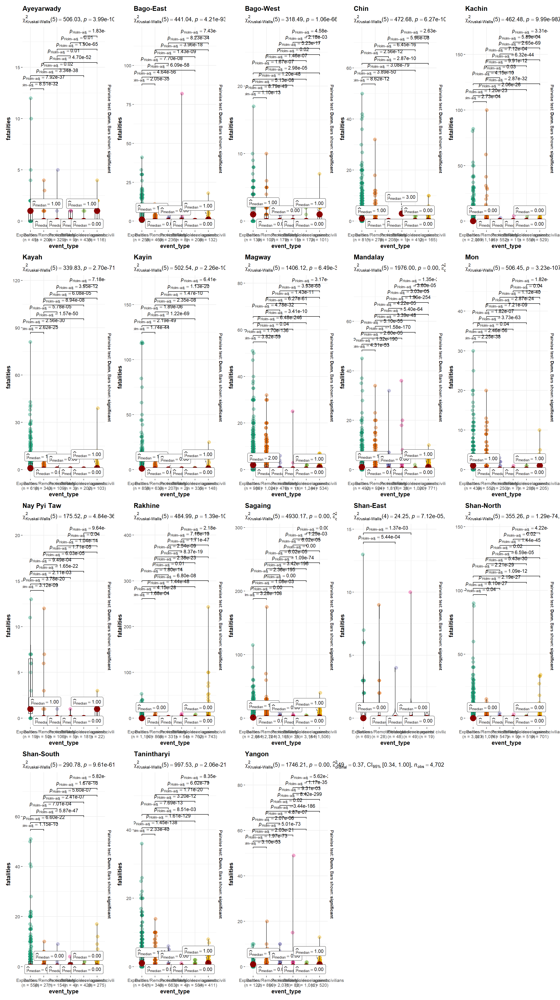
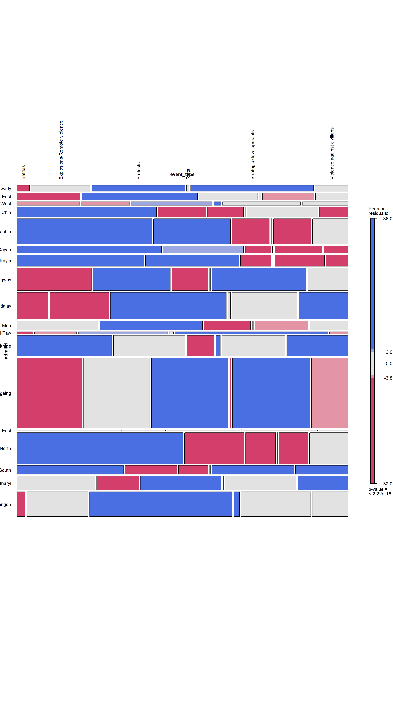

pacman::p_load(shiny, tidyverse, dplyr,
plotly,ggplot2,ggthemes,
knitr, vcd, readr, ggstatsplot,
lubridate)Armed Conflicts in Myanmar - Prototype
Confirmatory Data Analysis
The following page will run through the various steps on how to prepare the dataset to conduct Confirmatory Data Analysis (CDA).
1. Installing and Launching the Required R Packages
We will load the following packages by using the pacman::p_load function:
Shiny
Tidyverse
dplyr
vcd
ggplot2
ggstatplot
readr
ggthemes
plotly
knitr
lubridate
2. Loading the Datasets
The main dataset that will be used is ACLED_MMR. This dataset is obtained from the ACLED website which allows the selection of just extracting the particular country for our study - Myanmar.
ACLED_MMR <- read_csv("data/MMR.csv")3. Data Overview
The dataset contains a total of 35 variables and 57,198 rows.
ACLED_MMR# A tibble: 57,198 × 35
event_id_cnty event_date year time_precision disorder_type event_type
<chr> <chr> <dbl> <dbl> <chr> <chr>
1 MMR58558 16 February 2024 2024 1 Political vio… Battles
2 MMR58559 16 February 2024 2024 1 Political vio… Battles
3 MMR58443 16 February 2024 2024 2 Political vio… Violence …
4 MMR58502 16 February 2024 2024 1 Political vio… Violence …
5 MMR58507 16 February 2024 2024 1 Political vio… Explosion…
6 MMR58508 16 February 2024 2024 1 Political vio… Explosion…
7 MMR58547 16 February 2024 2024 1 Strategic dev… Strategic…
8 MMR58560 16 February 2024 2024 1 Political vio… Battles
9 MMR58589 16 February 2024 2024 2 Political vio… Violence …
10 MMR58648 16 February 2024 2024 1 Political vio… Explosion…
# ℹ 57,188 more rows
# ℹ 29 more variables: sub_event_type <chr>, actor1 <chr>, assoc_actor_1 <chr>,
# inter1 <dbl>, actor2 <chr>, assoc_actor_2 <chr>, inter2 <dbl>,
# interaction <dbl>, civilian_targeting <chr>, iso <dbl>, region <chr>,
# country <chr>, admin1 <chr>, admin2 <chr>, admin3 <chr>, location <chr>,
# latitude <dbl>, longitude <dbl>, geo_precision <dbl>, source <chr>,
# source_scale <chr>, notes <chr>, fatalities <dbl>, tags <chr>, …3.1 Converting Data Types
There are 2 fields that need to correct the data types, event_date and year. event_date will be converted to dmy format and year will be converted to factor. The following code chunk is used:
ACLED_MMR <- ACLED_MMR %>%
mutate(year =factor(year))
ACLED_MMR$event_date <- dmy(ACLED_MMR$event_date)3.2 Removing of Unused Columns
After reviewing the data, a few of the columns will not be used as they do not seem suitable for the analysis. The code chunk below removes these columns:
ACLED_MMR <- ACLED_MMR %>%
select(-time_precision, -geo_precision, -source_scale, -timestamp, -tags)3.3 Creating Subsets of the Dataset
The following subsets of the Dataset is created for the various CDA sections in the later part:
Summary_Data <- ACLED_MMR %>%
group_by(year, admin1, event_type) %>%
summarise(Total_incidents = n(),
Total_Fatalities = sum(fatalities, na.rm=TRUE)) %>%
ungroup() ACLED_MMR_Mosaic <- ACLED_MMR %>%
group_by(event_id_cnty,year, country, admin1,event_type, disorder_type, fatalities) %>%
summarize(
Has_Fatalities = ifelse(fatalities > 0, "Has Fatalities", "No Fatalities")
) %>%
ungroup()4. Anova Testing: Event Types & Fatatilites
The following code chunk below is used for Anova Testing of the types of events against the number of fatalities.
grouped_ggbetweenstats(ACLED_MMR,
x = event_type,
y = fatalities,
grouping.var = admin1,
type = "np",
pairwise.display = "s",
pairwise_comparisons = TRUE,
output = "plot")
5. Mosaic Plot : Region and Event Types
The following code chunk makes use of the mosaic plot function in the vcd package. The mosiac plot function provides a visual relationship between the various variables selected. The larger the box area, the more incidents that it has based on those categories. The colors in the various plot represent the Pearson Coefficient shown on the right of the plot
vcd::mosaic(~ admin1 + event_type, data = ACLED_MMR_Mosaic, gp = shading_max,
labeling = labeling_border(rot_labels = c(90,0,0,0),
just_labels = c("left",
"center",
"center",
"right")
))